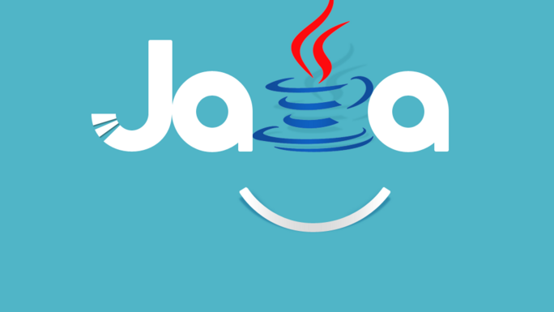

Java是一门面向对象编程语言，不仅吸收了C++语言的各种优点，还摒弃了C++里难以理解的 多继承、指针等概念，因此Java语言具有功能强大和简单易用两个特征。Java语言作为静态面向对象编程语言的代表，极好地实现了面 向对象理论，允许程序员以优雅的思维方式进行复杂的编程[1]。 Java具有简单性、面向对象、分布式、健壮性、安全性、平台独立与可移植性、多线程、动态性等特点[2] 。Java可以编写桌面应用 程序、Web应用程序、分布式系统和嵌入式系统应用程序等[3] 。
标题1
Java是一门面向对象编程语言，不仅吸收了C++语言的各种优点，还摒弃了C++里难以理解的 多继承、指针等概念，因此Java语言具有功能强大和简单易用两个特征。Java语言作为静态面向对象编程语言的代表，极好地实现了面 向对象理论，允许程序员以优雅的思维方式进行复杂的编程[1]。 Java具有简单性、面向对象、分布式、健壮性、安全性、平台独立与可移植性、多线程、动态性等特点[2] 。Java可以编写桌面应用 程序、Web应用程序、分布式系统和嵌入式系统应用程序等[3] 。
标题2
Java是一门面向对象编程语言，不仅吸收了C++语言的各种优点，还摒弃了C++里难以理解的 多继承、指针等概念，因此Java语言具有功能强大和简单易用两个特征。Java语言作为静态面向对象编程语言的代表，极好地实现了面 向对象理论，允许程序员以优雅的思维方式进行复杂的编程[1]。 Java具有简单性、面向对象、分布式、健壮性、安全性、平台独立与可移植性、多线程、动态性等特点[2] 。Java可以编写桌面应用 程序、Web应用程序、分布式系统和嵌入式系统应用程序等[3] 。
标题3
Java是一门面向对象编程语言，不仅吸收了C++语言的各种优点，还摒弃了C++里难以理解的 多继承、指针等概念，因此Java语言具有功能强大和简单易用两个特征。Java语言作为静态面向对象编程语言的代表，极好地实现了面 向对象理论，允许程序员以优雅的思维方式进行复杂的编程[1]。 Java具有简单性、面向对象、分布式、健壮性、安全性、平台独立与可移植性、多线程、动态性等特点[2] 。Java可以编写桌面应用 程序、Web应用程序、分布式系统和嵌入式系统应用程序等[3] 。